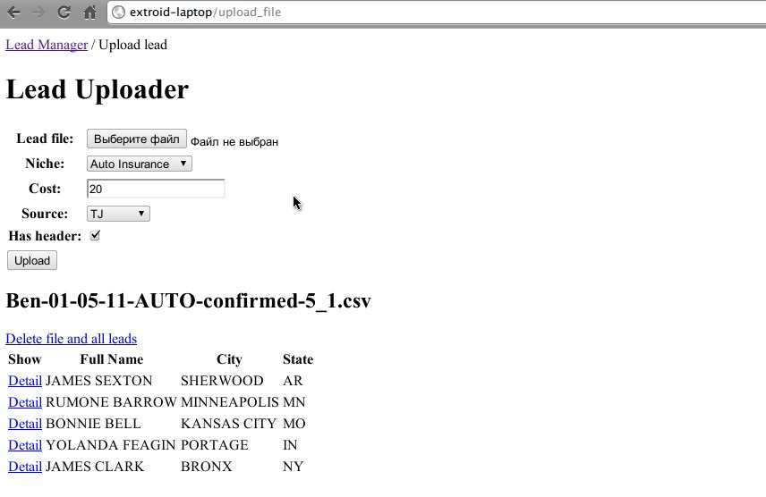
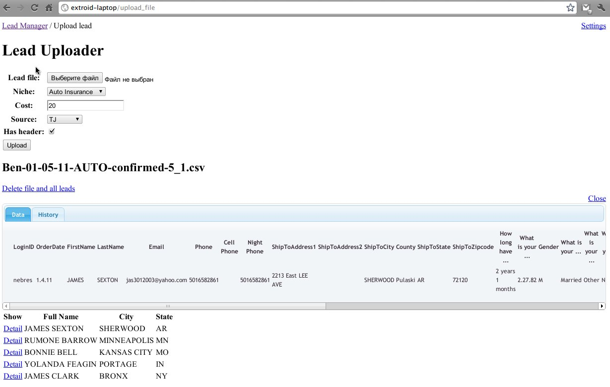
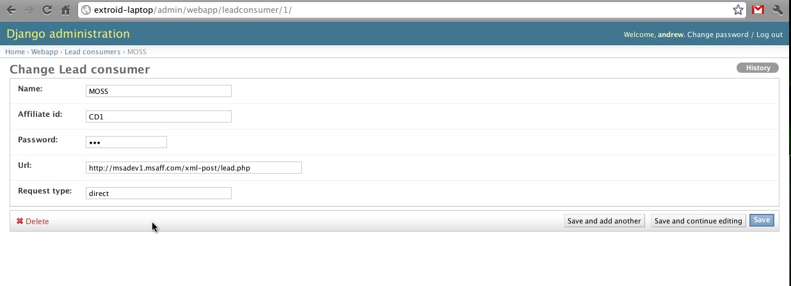
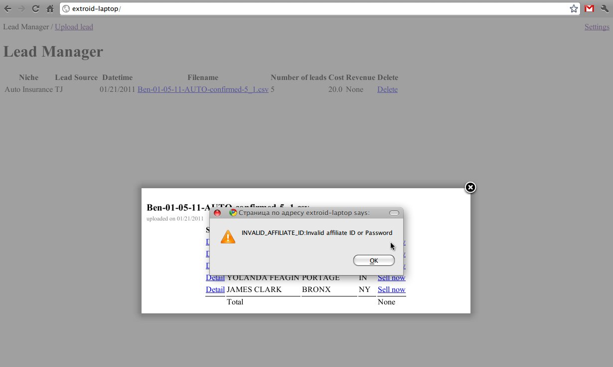
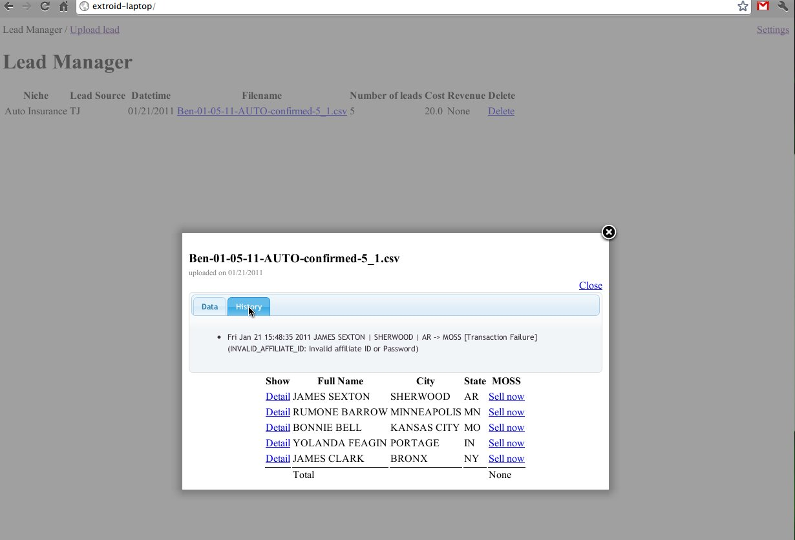

DATABASES = {
'default': {
'ENGINE': 'django.db.backends.sqlite3', # Add 'postgresql_psycopg2', 'postgresql', 'mysql', 'sqlite3' or 'oracle'.
'NAME': '%s/sqlite.db' % SITE_ROOT, # Or path to database file if using sqlite3.
'USER': '', # Not used with sqlite3.
'PASSWORD': '', # Not used with sqlite3.
'HOST': '', # Set to empty string for localhost. Not used with sqlite3.
'PORT': '', # Set to empty string for default. Not used with sqlite3.
}
}
cd c:\LeadManager\LeadManager
python manage.py syncdbAnswer all questions. It will also load all default data
python manage.py runserverIt runs internal webserver which listens to port 8000 at localhost. Bu you can specify domainname or IP address to listen to like
python manage.py runserver hostname:port
Select CSV file, select Niche, put a Cost and indicate if your file has a header (normally does). Header is a first row. If your file misses header uncheck Has Header to process all data. Push Upload. The system takes the file, parses it and adds leads into database. The result should be like this:  You can click on detail link to see full lead details. The full header labels are in tooltips. 
To post leads to MOSS you have to provide Affiliate ID and Password. It can be dobe in settings. Look at right top corner and find Settings link. It redirects you to Admin pages. You will be asked a user login and password. You have to use the username and password provide during syncdb session. When you log in choose Lead Consumers/MOSS
The you back in your browser Lead Manager and can sell leads. You click on a file entry and then you select lead entry and click on Sell now. The image shows result with wrong Affiliate ID and Password returned from MOSS.
You also can look at the lead entry details and see all transactions with this entry including erroneous ones. The attempt from previous step is registered in the database. All prices also will be shown in the history including negotiating with IA in future.
You also can delete lead files. It will delete all corresponding lead entries from database but your history will not be affected. You may want to delete if the file was added twice for example. The system calculates your revenue per files and per lead file.